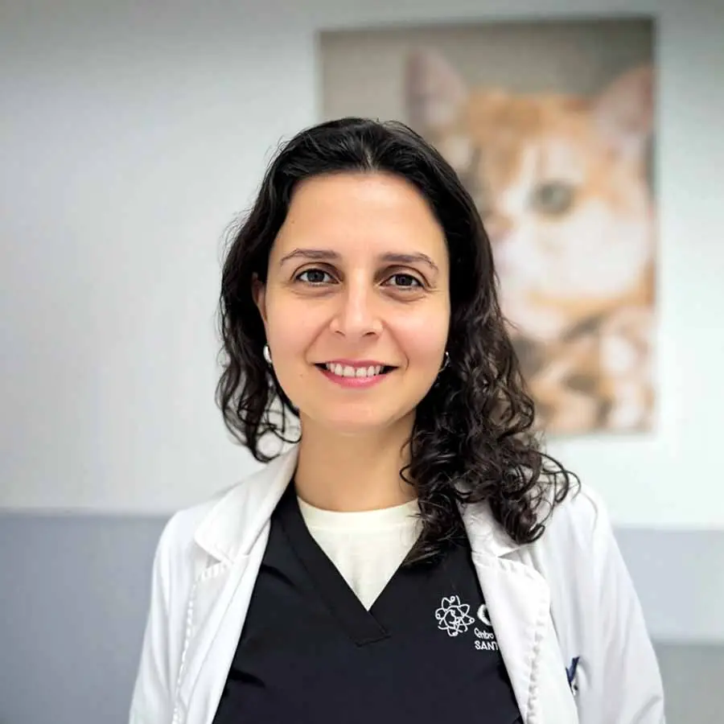
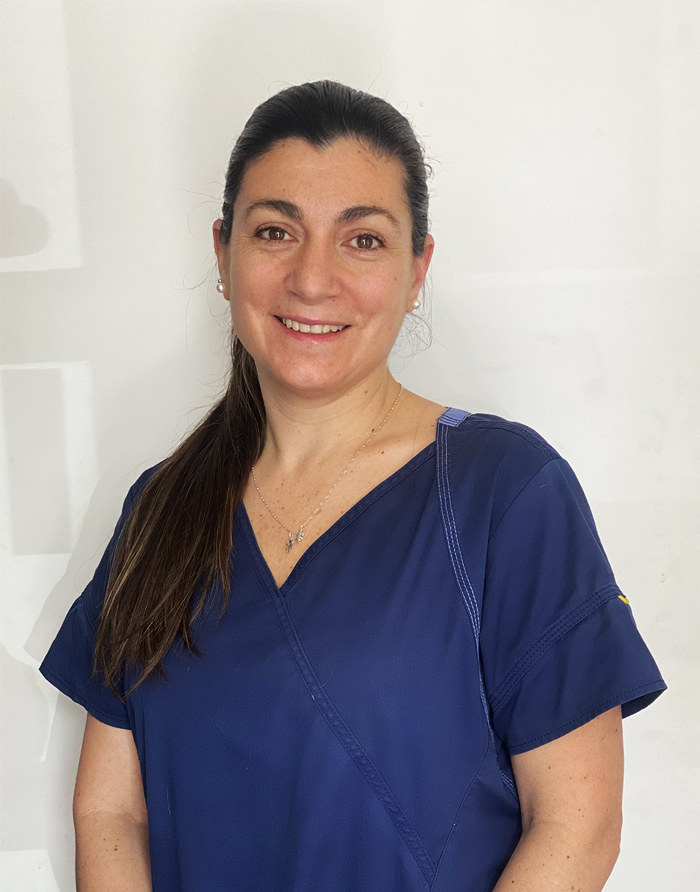

Premio Excelencia 2023Dra. María González
Médica Veterinaria
Encargada de examinar a los pacientes, realizar diagnósticos y registrar los tratamientos necesarios para cada mascota.
Dr. Carlos Rojas
Médico Veterinario
Realiza evaluaciones clínicas, determina diagnósticos y establece los tratamientos correspondientes según las necesidades de cada paciente.
Dra. Ana Silva
Médica Veterinaria
Atiende consultas veterinarias, examina a los pacientes y registra información relacionada con sus diagnósticos y tratamientos.
Dr. Felipe Morales
Técnico Veterinario
Apoya al médico veterinario durante la atención de los pacientes, aplica vacunas y administra medicamentos siguiendo las indicaciones correspondientes.

EspecialistaDra. Lucía Méndez
Recepcionista Administrativa
Se encarga de registrar las citas, atender llamados y buscar las fichas de los pacientes. También gestiona la información necesaria para la atención de las mascotas.